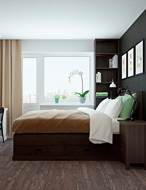
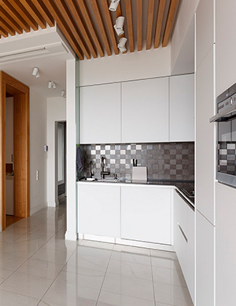

<!DOCTYPE html>
<html lang="ru"></html>
<head>
  <meta charset="UTF-8"/>
  <meta name="viewport" content="width=device-width, initial-scale=1, maximum-scale=1, user-scalable=no"/>
  <link rel="stylesheet" href="https://necolas.github.io/normalize.css/3.0.2/normalize.css"/>
  <link rel="stylesheet" href="css/style.css"/>
  <title>Строй MX | О компании</title>
</head>
<body>
  <header>
    <div class="mobile-menu"></div>
    <div class="logo"><a href="#"></a></div>
    <div class="top-phone"><span>Звоните с 9:00 до 19:00</span><a href="#">+7 (495) 411-19-37</a><a href="#">info@mx-remont.ru</a></div>
    <nav>
      <ul>
        <li><a href="#">О нас</a></li>
        <li><a href="#">Наши работы</a></li>
        <li><a href="#">Прайс</a></li>
        <li><a href="#">Партнерам</a></li>
        <li><a href="#">Контакты</a></li>
      </ul>
    </nav>
  </header>
  <main>
    <article>
      <h1>О компании</h1><span>Ремонтом под ключ, а также оказанием услуг, связанных с отделкой помещений, разработкой дизайн-проектов мы занимаемся с 2011 г.</span>
      <div class="tabs-panel"><a href="#" class="active">О нас			</a><a href="#">Наша команда			</a><a href="#">Отзывы клиентов</a><a href="#">Вакансии</a></div>
      <div class="about">
        <div class="about-wrap">
          <div class="side-photos"></div>
          <div class="about-content">
            <p>За указанный период наши специалисты выполнили ремонтные работы во многих жилых и общественных помещениях в Москве и Московской области. Высокая профессиональная квалификация наших специалистов, имеющийся у них солидный опыт работы, позволяют нам предлагать услуги, связанные с различными видами ремонта офиса либо квартиры независимо от сложности. Мы выполняем общестроительные, ремонтные, отделочные, столярные, сантехнические, электромонтажные работы. Создаем дизайн-проекты интерьеров.</p>
            <p>При разработке дизайн-проекта мы предложим несколько вариантов планировки помещения, разделения его на комнаты и зоны. Организация освещения, выбор оптимальных мест для электрических приборов и розеток, выбор отделочных материалов, нескольких версий расстановки мебели – все это вы увидите на 3D изображении будущего объекта.</p>
            <p>Наши специалисты осуществляют все необходимые работы на профессиональном уровне, производя их в срок, с выполнением абсолютно всех договорных обязательств. А к каждому клиенту специалисты компании находят индивидуальный подход.</p>
            <div class="about-title">Ремонт квартир в Москве и МО</div>
            <p>Отделочные работы одно из распространенных направлений в услуге ремонт квартир. Отделка квартир обиходное название строительно-ремонтных работ. Время необходимое на устранение недостатков и приведение к созданному дизайнером виду и классу работ, определяет конечную стоимость.</p>
            <div class="about-title">Новостройки</div>
            <p>Ремонт новостройки сопровождается перепланировкой, демонтажем и состоит из самой шумной и тяжелой работы. Обратившись в компанию “Ремонт квартир.me” вы значительно упростите задачу по соблюдению сроков и переедете в капитально отремонтированную квартиру трех, двух или однокомнатной планировки.</p>
            <div class="about-title">О компании</div>
            <p>В бригадах фирмы “Ремонт квартир.me” все специалисты с допуском к отделочным и строительным работам. Выполняем дизайнерские, строительные, капитальные и инженерных работ в с заключением договора в Москве, Санкт-Петербурге и Подмосковье.</p>
            <p>
              По уровню отделки выделяем:<br>
              Евроремонт квартир<br>
              Евроремонт квартиры<br>
              Евроремонт квартир – бизнес класс, отличительная черта проработка от проектирования до черновых и чистовых работ, а так же декорирование интерьера в индивидуальном стиле с использованием дорогих материалов вплоть до драгоценных. Евроремонт квартиры выполняется под «ключ» утверждаясь на этапе заключения договора с минимальным привлечением заказчика, используется подходит для ремонта офисов.
            </p>
            <p><b>Дизайн проект</b>. Заказчику предоставляется готовый дизайн квартиры со всем комплексом ремонтных работ под контролем прораба и дизайнера «авторский надзор», указанием сроков и проектной документацией. Ремонт квартир «евро» стандарта, перепланировка и обустройство с применением современных ремонтных технологий и высококачественных материалов.</p>
            <p><b>Отделка потолков</b>. Вариаций выполнения с применением необычных раскрасок и форм потолочных покрытий зависит от дизайна квартиры и замысла дизайнера помещения под евроремонт. Используем практичные ткани натяжных потолков, отделку штукатуркой, индивидуальную роспись и другие комбинации строительных материалов.</p>
            <p><b>Спальня, гостиная</b>. Основные комнаты в любой квартире спальня, гостиная в их ремонте используют схожий спектр технических и материальных ресурсов. Наиболее разумно реализуют их планировку специалисты компании в личной консультации, а так же замерщик-мастер при выезде на объект.</p>
            <p><b>Ванная комната</b>. Ремонт квартиры начинается с ванной комнаты по причине самых трудоемких и продолжительных работ. Евроремонт ванной комнаты – разводка сантехнической части и благоустройство рабочей площади комнаты с применением водостойкой мебели и укладка плитки на пол. Цветные ванные комнаты, джакузи, парилки, душевые кабины подходят для «евро» класса.</p>
            <p><b>Кухня</b>. Ремонт кухни европейского уровня включает комплекс проектировочных и отделочных работ. Особое внимание уделяется покрытию стен и техническому оснащению рабочей зоны. Клиенту предоставляются примеры готовых интерьеров или индивидуальная разработка на основе пожеланий. В ремонте кухни основной упор на функциональность и здоровье. Применение древесных пород и природного камня положительно сказывается на стилистическом восприятии и уровне экологичности.</p>
            <div class="about-title">Косметические работы</div>
            <p>Косметические работы позволяют упростить процесс и затратить меньше средств, за счёт экономии на объемах и стоимости материалов. Косметический ремонт квартиры имеет плюсы в скорости и цене, но проигрывает по объему реализуемых услуг. По определению он не включает реконструкцию, демонтаж и монтаж конструкций (перепланировка).</p>
            <p><b>Дизайн проект</b>. Заказчику предоставляется готовый дизайн квартиры со всем комплексом ремонтных работ под контролем прораба и дизайнера «авторский надзор», указанием сроков и проектной документацией. Ремонт квартир «евро» стандарта, перепланировка и обустройство с применением современных ремонтных технологий и высококачественных материалов.</p>
            <p><b>Отделка потолков</b>. Вариаций выполнения с применением необычных раскрасок и форм потолочных покрытий зависит от дизайна квартиры и замысла дизайнера помещения под евроремонт. Используем практичные ткани натяжных потолков, отделку штукатуркой, индивидуальную роспись и другие комбинации строительных материалов.</p>
            <p><b>Спальня, гостиная</b>. Основные комнаты в любой квартире спальня, гостиная в их ремонте используют схожий спектр технических и материальных ресурсов. Наиболее разумно реализуют их планировку специалисты компании в личной консультации, а так же замерщик-мастер при выезде на объект.</p>
            <p><b>Ванная комната</b>. Ремонт квартиры начинается с ванной комнаты по причине самых трудоемких и продолжительных работ. Евроремонт ванной комнаты – разводка сантехнической части и благоустройство рабочей площади комнаты с применением водостойкой мебели и укладка плитки на пол. Цветные ванные комнаты, джакузи, парилки, душевые кабины подходят для «евро» класса.</p>
            <p><b>Кухня</b>. Ремонт кухни европейского уровня включает комплекс проектировочных и отделочных работ. Особое внимание уделяется покрытию стен и техническому оснащению рабочей зоны. Клиенту предоставляются примеры готовых интерьеров или индивидуальная разработка на основе пожеланий. В ремонте кухни основной упор на функциональность и здоровье. Применение древесных пород и природного камня положительно сказывается на стилистическом восприятии и уровне экологичности.</p>
          </div>
        </div>
      </div>
    </article>
    <aside>
      <div class="services">
        <h2>Наши услуги</h2>
        <ul>
          <li><a href="#">Ремонтные работы</a></li>
          <li><a href="#">Дизайн интерьера</a></li>
        </ul>
      </div>
      <div class="why">
        <h3>Почему выбирают именно нас</h3>
        <p>Мы более 10 лет работаем на московском рынке ремонтно-строительных работ и успели завоевать доверие наших клиентов. Вот главные преимущества сотрудничества с нами:</p>
        <ul>
          <li>Качественные материалы и современное оборудование</li>
          <li>Высококвалифицированные специалисты</li>
          <li>Гарантия на выполненные работы</li>
          <li>Адекватные цены</li>
          <li>Допуск СРО</li>
        </ul>
      </div>
      <div class="price">
        <h4>Стоимость работ</h4>
        <div class="tabs-panel"><a href="#" class="active">Ремонт помещений</a><a href="#">Дизайн интерьера</a></div>
        <div class="tabs-container">
          <div class="tab">
            <div class="price-item">
              <p>Косметический ремонт</p><span>от 3 500 р./м2</span>
            </div>
            <div class="price-item">
              <p>Капитальный ремонт</p><span>от 5 500 р./м2</span>
            </div>
            <div class="price-item">
              <p>Евро ремонт</p><span>от 7 000 р./м2</span>
            </div>
            <div class="btn">Подробнее</div>
          </div>
        </div>
      </div>
      <div class="response">
        <h5>Отзывы наших клиентов</h5>
        <div class="response-head">за 10 лет работы мы успели себя зарекомендовать на рынке ремонтных услуг. Вот что о нас говорят наши клиенты:</div>
        <div class="response-item">
          <div class="response-author">Александр</div>
          <div class="response-city">г. Москва</div>
          <div class="response-text">все отлично выполнили, в оговоренные сроки, доволен полностью!</div>
          <div class="response-audio"><a href="#">Аудиоотзыв</a></div>
        </div>
        <div class="response-item">
          <div class="response-author">Мария</div>
          <div class="response-city">г. Москва</div>
          <div class="response-text">Большое спасибо всему коллективу компании «РеалСтройСервис» за выполненный ремонт и своевременное его окончание. Со всеми было приятно общаться и наблюдать за Вашей нелегкой работой. Хочется Вас рекомендовать, Вы этого заслуживаете ! </div>
          <div class="response-audio"><a href="#">Аудиоотзыв</a></div>
        </div>
      </div>
    </aside>
  </main>
  <footer>
    <div class="footer-wrap">
      <div class="footer-info">
        <div class="footer-menu">
          <div class="title">Меню</div>
          <ul>
            <li><a href="#">О компании</a>
              <ul class="inner-list">
                <li><a href="#">О нас</a></li>
                <li><a href="#">Наша команда</a></li>
                <li><a href="#">Отзывы клиентов</a></li>
                <li><a href="#">Вакансии</a></li>
              </ul>
            </li>
            <li><a href="#">Наши работы</a></li>
            <li><a href="#">Статьи</a></li>
            <li><a href="#">Прайс</a></li>
            <li><a href="#">Партнерам</a></li>
            <li><a href="#">Контакты</a></li>
          </ul>
        </div>
        <div class="footer-contacts">
          <div class="title">Контакты</div>
          <div>ООО «Строй-МХ»</div>
          <div>г. Москва, пер. 1-й Красносельский, дом 3</div>
          <div>ИНН:    <b>7708271265</b></div>
          <div>КПП:    <b>770801001</b></div>
          <div>Телефон:  <b>+7 (495) 4-111-937</b></div>
          <div>E-mail:    <b>info@mx-remont.ru</b></div>
        </div>
        <div class="footer-callback">
          <div class="title">Обратная связь</div>
          <div class="footer-form">
            <input type="text" placeholder="Ваше имя" class="field form-name"/>
            <input type="text" placeholder="Телефон" class="field form-phone"/>
            <div class="send-btn">Отправить &rarr;</div>
          </div><i>Наш менеджер свяжется с вами в течение 15 минут и ответит на все ваши вопросы</i>
        </div>
      </div>
      <div class="footer-bottom">
        <div class="footer-logo"></div>
        <div class="footer-copyr">© 2016 | Строй-МХ - дизайн и ремонт помещений</div>
        <div class="footer-created">	Разработано в<a href="#">Рекламотерапия</a></div>
      </div>
      <script src="js/jquery-3.0.0.min.js"></script>
      <script src="js/main.js"></script>
    </div>
  </footer>
</body>